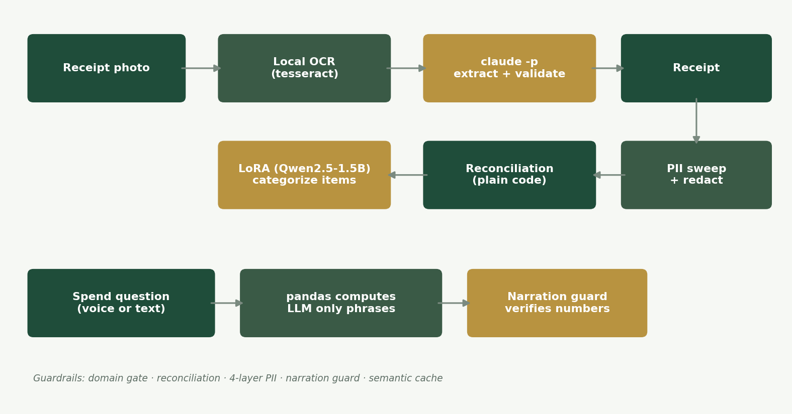

Benchmark
Three systems, one held-out test set
The test set holds 220 line items from 158 merchants. The split is by merchant, so no merchant appears in both training and test, and a leakage check confirmed it. The base and LoRA models ran on all 220 rows; Claude ran on a 150-row subsample of the same set to keep the run time down.
| System | N | Top-1 | Macro-F1 | Latency | Cost/1k |
|---|---|---|---|---|---|
| Base Qwen2.5-1.5B | 220 | 27.7% | 0.333 | 5.0 s | $0 |
| Qwen2.5-1.5B + LoRA | 220 | 90.5% | 0.893 | 4.5 s | $0 |
| Claude, zero-shot | 150 | 56.0% | 0.506 | 17.7 s | Max subscription |
The training data is 4,799 synthetic line items generated with
claude -p in the abbreviated styles real point-of-sale systems
print: SBUX #4821, WM SUPERCENTER #2847,
TST* JOE'S PIZZA. The split is 4,309 train, 270 validation and
220 test. Training ran on Apple Silicon with MLX: batch 4, 12 LoRA layers,
800 iterations, learning rate 1.5e-4. Validation loss fell from 5.085 to
0.419.

Reading the gap
What 90.5% against 56.0% does and doesn't show
The test labels come from the same synthetic generator as the training
data, and they are not always consistent. A first-aid kit at CVS is
labeled other; Shell unleaded is fuel on one row
and transport on another. The LoRA model learned the
labeler's habits, including those. Claude generated those labels in the
first place, yet asked one item at a time it often gives the more
defensible answer and is marked wrong.
| Merchant, item | Label | LoRA | Claude |
|---|---|---|---|
| CHEVRON #7843UNLEADED 87 10.5 GAL | fuel | fuel | fuel |
| HYATT REGENCY #3421LODGING ROOM 1705 2NTS | travel | travel | travel |
| CVS #2156FIRST AID KIT | other | other | health |
| CVS PHARMACY #4782COLD RELIEF CAPLETS 24CT | other | other | health |
| STARBUCKS COFFEE #2156GRANDE CAFFE LATTE | dining | coffee_snacks | coffee_snacks |
| SHELL*GAS STATIONUNLEADED 87 12.5 GAL | transport | fuel | fuel |
Rows from the held-out test set with the stored model outputs in eval/raw_outputs.json. Claude's column is the category its answer named.
Two more problems with the Claude column. First, Claude answered in full
sentences, and the scorer picks the longest category name that appears
anywhere in the text. About half of Claude's answers mention more than one
category ("health, distinct from household or other"), so some correct
answers were scored as wrong, and 56.0% understates it. Second, the prompt
gave no category list, but claude -p ran from inside the repo
with file access, and 101 of its 150 answers cite
src/schemas.py. In practice Claude saw the category list. Menu
Decoder, another app in the series, hit the same problem and fixed it by
running the CLI from a scratch directory; this benchmark was not rerun.
The script that produced the published numbers was lost before it was
committed. training/bench_categorizer.py is a reconstruction
that reproduces the LoRA figure exactly and the other two approximately
(about 26% and 51%). There is no real-receipt test set yet: the spec calls
for 10 to 20 real receipts, hand-labeled, and none have been added. All
figures here are on synthetic data.
What the result does support: a 1.5B model with a small adapter learns a fixed 12-label scheme well enough to replace a frontier-model call for this step, at a quarter of the latency and no per-call cost.
Design
The model phrases numbers; code computes them
Ask "how much did I spend on dining" and a pandas query in
analysis.answer_query computes the figure. The LLM gets the
computed numbers and writes one sentence. Then
reconcile.assert_numbers_present checks that every number it
was given still appears in that sentence, within a cent. If one was
dropped or changed, the app shows a template sentence instead.
Receipt totals get the same treatment. For each receipt the app adds the line items and tax and compares the sum with the printed total, allowing the larger of 2 cents or 0.5%. A mismatch is flagged for a one-tap human correction and never adjusted to agree.

Privacy
Four layers of PII handling
The Receipt and LineItem schemas have no field for
a cardholder name, card number, address or loyalty number, so extraction
never asks for them. The raw OCR text is discarded once a validated
Receipt exists. privacy.sweep_receipt then runs a
regex pass over merchant and item strings, masks card-like digit runs to
the last four, replaces emails and phone numbers, and reports how many
redactions it made. On a hosted deployment, receipts stay in memory for the
session; privacy.is_space_environment() is the one check both
paths use before writing anything to disk.
Build
Stack and series
- Classifier
- Qwen2.5-1.5B-Instruct (4-bit), LoRA via MLX on Apple Silicon, served with
mlx_lm.generate - Extraction
tesseractOCR, then oneclaude -pcall per receipt to check it is a receipt and pull structured fields- Validation
- Pydantic schemas; reconciliation and narration guard in
src/reconcile.py - Queries
- Spoken or typed questions parsed into a structured
Query, answered by pandas, repeats served from a semantic cache - App
- Gradio: batch upload, reconciled grid, dashboard, voice query
- Series
- One of four apps that fine-tune a local model and benchmark it against Claude: Cellar Scanner, Race Day Copilot, Receipt Auditor, Menu Decoder